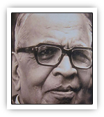

|

|
| ಜನನ |
9 ಆಗಸ್ಟ್ 1909, ಸವದತ್ತಿ, ಬೆಳಗಾವಿ ಜಿಲ್ಲೆ
|
| ವೃತ್ತಿ |
ಪ್ರಮುಖ ಪಾತ್ರಗಳು
ಕವಿ, ವಿಮರ್ಶಕ, ಶಿಕ್ಷಣತಜ್ಞ
- ನವೋದಯ ಕಾವ್ಯಚಳವಳಿಯ ಪ್ರಮುಖ ಕವಿಗಳಲ್ಲಿ ಒಬ್ಬರು
- ಭಾರತೀ ಕಾವ್ಯ ಶೈಲಿಗೆ ನಾಂದಿ ಹಾಡಿದ ಚಿಂತಕ
- ಇಂಗ್ಲೀಷ್ ಮತ್ತು ಕನ್ನಡ ಸಾಹಿತ್ಯದ ಸೇತುವೆ ನಿರ್ಮಿಸಿದ ಬಹುಭಾಷಾ ಜ್ಞಾನಿ
- ಶೈಕ್ಷಣಿಕ ಚಿಂತನೆ, ಪಠ್ಯಕ್ರಮ ಮತ್ತು ಶಿಕ್ಷಣ ಪದ್ಧತಿಗಳಲ್ಲೂ ಪ್ರಮುಖ ಕೊಡುಗೆ
|
| ಪ್ರಶಸ್ತಿ |
ಗೌರವಗಳು ಮತ್ತು ಪ್ರಶಸ್ತಿಗಳು
- ಜ್ಞಾನಪೀಠ ಪ್ರಶಸ್ತಿ (1990) — “ಭಾರತೀ ಕಾವ್ಯ” ಶೈಲಿಗೆ ನೀಡಿದ ಕೊಡುಗೆಗಾಗಿ
- ಪದ್ಮಭೂಷಣ
- ಸಾಹಿತ್ಯ ಅಕಾಡೆಮಿ ಪ್ರಶಸ್ತಿ
- ಕರ್ನಾಟಕ ಸಾಹಿತ್ಯ ಅಕಾಡೆಮಿ ಗೌರವ
- ರಾಷ್ಟ್ರೀಯ ಹಾಗೂ ಅಂತರರಾಷ್ಟ್ರೀಯ ಸಮ್ಮೇಳನಗಳಲ್ಲಿ ಮುಖ್ಯ ವಕ್ತಾರ
|
| ಮರಣ |
ಅಂತ್ಯ ಮತ್ತು ಪರಂಪರೆ
28 ಏಪ್ರಿಲ್ 1992, ಬೆಂಗಳೂರು
- ಕನ್ನಡ ಸಾಹಿತ್ಯ ಲೋಕ ಕಳೆದುಕೊಂಡ ಮಹತ್ವದ ವಿಮರ್ಶಕ–ಕವಿ
- ಗೋಕಾಕ್ ವರದಿ ಮೂಲಕ ಕನ್ನಡ ಮಾಧ್ಯಮ ಶಿಕ್ಷಣಕ್ಕೆ ದಿಕ್ಕು ನೀಡಿದವರು
- ಅವರ ಸಾಹಿತ್ಯ, ಶಿಕ್ಷಣ ಮತ್ತು ಭಾಷಾ ಚಿಂತನೆಗಳು ಇಂದಿಗೂ ಪ್ರೇರಣೆ
|
| ಸಂಕ್ಷಿಪ್ತ ವಿವರಣೆ |
ಸಾರಾಂಶ (ಸಾಹಿತ್ಯ ಮತ್ತು ಶೈಲಿ)
ವಿ.ಕೆ. ಗೋಕಕ್ ನವೋದಯ ಯುಗದ ಪ್ರಮುಖ ಕವಿ ಹಾಗೂ ಭಾಷಾ ಚಿಂತಕರು.
- ಭಾರತೀಯ ಜೀವನಮೌಲ್ಯಗಳು, ಸಂಸ್ಕೃತಿ ಮತ್ತು ಮಾನವೀಯತೆಗೆ ಆದ್ಯತೆ ನೀಡಿದ ಕವಿ
- ಆಂಗ್ಲ ಸಾಹಿತ್ಯದ ಪ್ರಭಾವವನ್ನು ಕನ್ನಡಕ್ಕೆ ಸೂಕ್ತವಾಗಿ ಅನುವಾದಿಸಿದವರು
- ಕಾವ್ಯ, ವಿಮರ್ಶೆ, ಪ್ರಬಂಧ—ಎಲ್ಲ ಕ್ಷೇತ್ರಗಳಲ್ಲೂ ಸಮನಾಗಿ ಗುರುತಿಸಿಕೊಂಡವರು
ಪ್ರಮುಖ ಕೃತಿಗಳು
- ಭಾರತೀ ಕಾವ್ಯ
- ದುರ್ವಾಸ
- ಸಮುದ್ರಶಿಲೆ
- ಪಥದೀಪ
- ಇಂಗ್ಲೀಷ್ ಕಾವ್ಯ ಮತ್ತು ವಿಮರ್ಶಾ ಕೃತಿಗಳ ಅನುವಾದ
ಪ್ರಭಾವ ಮತ್ತು ಕೊಡುಗೆ
- ಗೋಕಾಕ್ ವರದಿಯಿಂದ ಕನ್ನಡ ಮಾಧ್ಯಮ ಬಲವರ್ಧನೆ
- ಕನ್ನಡದ ನವೋದಯ ಚಳವಳಿಗೆ ಆಳವಾದ ಪರಿಣಾಮ
- ಸಾಹಿತ್ಯ–ಶಿಕ್ಷಣ ಕ್ಷೇತ್ರಕ್ಕೆ ದೀರ್ಘಕಾಲಿಕ ಕೊಡುಗೆ
|